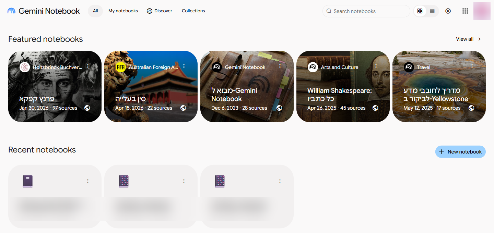
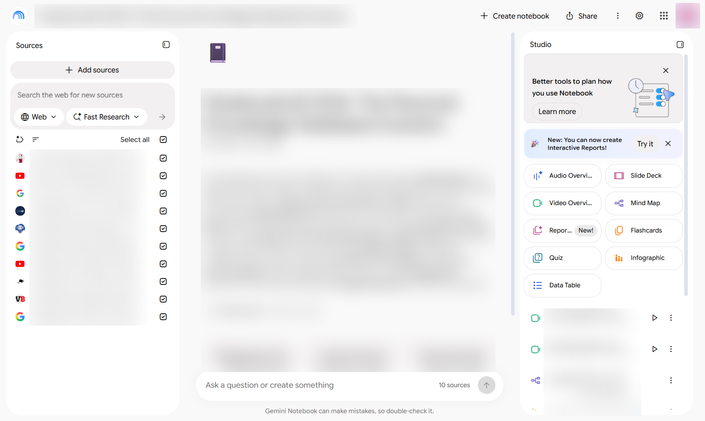
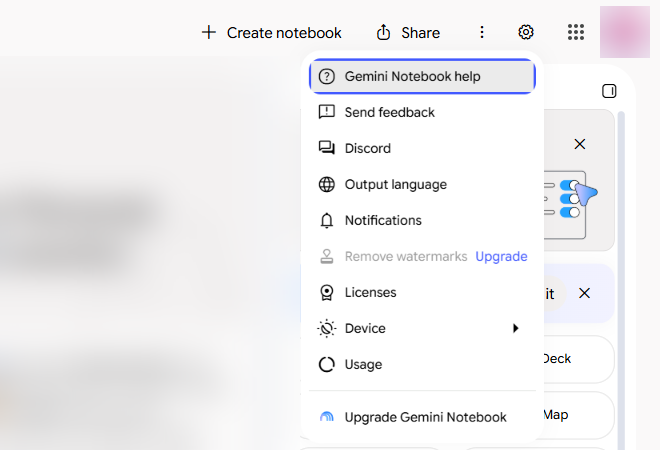
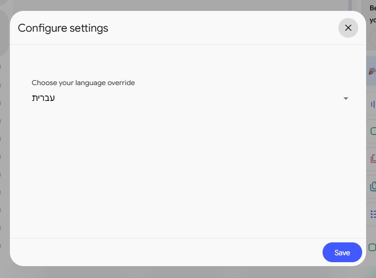

Gemini Notebook
המחברת שקוראת בשבילכם
מעלים מקורות1, שואלים שאלות2, ומקבלים סיכום, פודקאסט בעברית, מצגת או חידון3.
עוזר שקרא את כל המסמכים שלכם
יש לכם 50 מסמכים ואין זמן לקרוא? מעלים אותם למחברת, והיא עונה רק מתוכם.
עונה מהמקורות שלכם
כל תשובה מגיעה עם הפניה למקום המדויק במסמך. לוחצים ורואים מאיפה המידע.
הופך מסמכים לתוצרים
פודקאסט, סרטון, מצגת, מפת חשיבה, כרטיסיות וחידון. הכל מאותם מקורות.
מחפש גם ברשת
Deep Research מחפש באינטרנט מקורות חדשים ומוסיף אותם למחברת.
איך מתחילים
שלושה צעדים, עם חשבון Google רגיל.
נכנסים ל-notebook.google.com
ומתחברים עם חשבון Google. אפשר גם עם החשבון הבית ספרי, אם הכלי פתוח בו.
יוצרים מחברת חדשה
לוחצים New notebook ונותנים שם, למשל "סיכום פרוטוקולים".
מעלים מקורות1
קבצים, קישורים, סרטונים או טקסט מודבק. אפשר לחבר גם קבצים מ-Google Drive.
המסך הראשון אחרי שנכנסים
למעלה מחברות לדוגמה של Google, ומתחת המחברות שלכם.

מחברת פתוחה: שלושה טורים

כל התוצרים בעברית, גם הפודקאסט
קובעים פעם אחת את שפת הפלט, והיא חלה על כל מה שהמחברת יוצרת.

1לוחצים על גלגל השיניים, ואז Output language

2בוחרים עברית ולוחצים Save. זהו.
2
איך עובדים עם המחברת
שואלים, יוצרים תוצרים, ולומדים את החומר.
שואלים, ומקבלים תשובה עם מקור
כותבים שאלה בשפה חופשית, בעברית או באנגלית.
Studio: תשעה תוצרים בלחיצה
בטור הימני של המחברת. כל אריח יוצר תוצר מהמקורות שבחרתם.
להאזנה ולצפייה
פודקאסט וסרטון הסבר.
Audio Overview · Video Overview
לישיבה ולכיתה
מצגת, אינפוגרפיקה ומפת חשיבה.
Slide Deck · Infographic · Mind Map
לחזרה ולסדר
כרטיסיות, חידון, דוחות וטבלת נתונים.
Flashcards · Quiz · Reports · Data Table
פודקאסט על החומר שלכם, בעברית
Audio Overview: שני מגישים משוחחים על המקורות. מאזינים בדרך לעבודה.
קובעים שפת פלט עברית1
בגלגל השיניים, תחת Output language. פעם אחת מספיקה.
בוחרים מקורות
מסמנים בטור השמאלי רק את המקורות שרוצים בפודקאסט.
לוחצים על האריח
הפודקאסט נוצר ברקע. בינתיים ממשיכים לעבוד.
שלושה סוגי סרטונים
בוחרים ב-Video Overview את סוג הסרטון.
סרטון הסבר1
Explainer: סרטון שמסביר את החומר מתוך המקורות. ביותר מ-80 שפות, גם בעברית.
סרטון קצר1
Short: בערך 60 שניות, לאורך, כמו סטורי. גם הוא ביותר מ-80 שפות, גם בעברית.
סרטון קולנועי2
Cinematic: רק במנוי Pro או Ultra, מגיל 18, ובאנגלית בלבד.
שאלה שנותנת תשובה טובה
לוחצים "העתקה", ומדביקים בתיבת השאלות של המחברת.
מקור
רק מהמסמכים
מה
החלטות ונושאים פתוחים
פרטים
אחראי ותאריך יעד
צורה
טבלה בעברית
מה חדש השנה
שם חדש, ועוד כמה יכולות שכדאי להכיר.
מקורות מהשיחה
המחברת מציעה מקורות חדשים תוך כדי שאלות, ו-Deep Research מחפש ברשת.
מכסה שמתחדשת1
בחשבון אישי המכסה מתחדשת כל 5 שעות. תוצר כבד אפשר לדחות עם Generate later.
ניתוח נתונים
הרצת קוד לניתוח טבלאות ונתונים. זמין במנויי Pro ו-Ultra, באתר.
ייצוא לקבצים2
לפי דיווחים, ייצוא ל-Word, ל-CSV ולקובצי Office מגיע קודם במנוי Ultra.
הכלי שמותר לתת לתלמידים
בניגוד לרוב כלי ה-AI בסדרה, כאן גם תלמידים צעירים יכולים לעבוד בחשבון הבית ספרי.
חינם בכל חשבון חינוך
בכל מהדורה של Google Workspace for Education, בלי תשלום נוסף.
לכל הגילים1
פתוח גם לתלמידים מתחת לגיל 18, עם הגנות נוספות. חלק מהתוצרים סגורים בפניהם.
מנהל המערכת שולט
מנהל המערכת של בית הספר קובע אם הכלי פתוח לתלמידים, ולאילו קבוצות.
המחברת וצ'אט AI, ביחד
צ'אט AI, כמו ChatGPT, Claude או Gemini, טוב ביצירה מאפס. המחברת טובה בעבודה עם מסמכים קיימים.
המחברת מסכמת, הצ'אט כותב
מסכמים במחברת את הדוחות, ומדביקים את הסיכום בצ'אט כדי לנסח ממנו מייל, פוסט או דף להורים.
הצ'אט אוסף, המחברת מעבדת
מבקשים מהצ'אט רשימת מקורות או טיוטה, מעלים למחברת, ויוצרים ממנה פודקאסט, מצגת או חידון.
3
מתי כן, ומתי לא
בלי הבטחות: מה מעולה, מה מוגבל, ומה עושים עם זה.
מה מעולה, ומה כדאי לדעת מראש
מתי כן
- יש הרבה מסמכים ומעט זמן לקרוא
- צריך תשובה שאפשר לבדוק מול המקור
- רוצים להפוך חומר לפודקאסט, מצגת או חידון
- מחפשים כלי AI שמתאים גם לתלמידים
- לומדים חומר חדש לפני ישיבה או השתלמות
מתי לא, ומה עושים
- לא כותב תוכן מאפסמתחילים בצ'אט AI, וממשיכים במחברת
- מצגת שיוצאת בסיסית בעיצובמשפרים ב-PowerPoint או ב-Canva
- הסרטון הקולנועי באנגלית ובתשלוםסרטון הסבר או סרטון קצר מספיקים לרוב
- המכסה נגמרת באמצע עבודהבחשבון אישי מחכים עד 5 שעות או בוחרים Generate later. בחשבון בית ספרי ממשיכים מחר
כמה זה עולה
מחירי המנויים של Google בישראל, לחודש.
עד 100 מחברות ו-50 מקורות בכל מחברת. וחינם גם בכל חשבון חינוך של בית ספר.
עד 200 מחברות ו-100 מקורות בכל מחברת.1
עד 500 מחברות ו-300 מקורות בכל מחברת, סרטון קולנועי ו-5TB אחסון.
₪390 או ₪749.90, לפי המסלול. היכולות החדשות מגיעות לכאן ראשונות.
מחברת או צ'אט AI?
לא מחליף, משלים. כל אחד חזק במשהו אחר.
Gemini Notebook
- עונה מהמסמכים שלכם, עם הפניה למקור
- המקורות נשמרים במחברת מסודרת
- פודקאסט, סרטון, מצגת וחידון מאותו חומר
- פתוח גם לתלמידים בחשבון בית ספרי
צ'אט AI
- כותב תוכן מאפס: מיילים, מאמרים, רעיונות
- טוב לסיעור מוחות ולשאלות כלליות
- לא תמיד מראה מאיפה המידע
- למשל ChatGPT, Claude או Gemini
רגע, זה בדיוק אני
שלושה מצבים שכולנו מכירים, ואיך פותרים אותם בכמה דקות.
מבחן בשבוע הבא
מעלים את חומרי הלימוד של היחידה, ויוצרים כרטיסיות וחידון לחזרה. התלמידים מאזינים גם לפודקאסט בעברית.
בערך 10 דקות
30 דוחות לפני ישיבת הנהלה
מעלים את כל הדוחות, ושואלים מה הממצאים העיקריים ומה דורש החלטה. כל טענה עם מקור.
בערך 5 דקות
נהלים שאף אחד לא זוכר
מעלים את חוזרי הנהלים, וכל מי שבחדר המורים או במזכירות שואל את המחברת במקום לחפש בתיקיות.
בערך 5 דקות
למי זה מתאים
לכל מי שיש לו יותר חומר לקרוא מזמן לקרוא אותו.
הוראה
חומרי חזרה, חידונים וכרטיסיות מתוך חומרי הכיתה. ותלמידים עובדים במחברת בעצמם, בחשבון הבית ספרי.
ניהול
סיכום דוחות ופרוטוקולים, הכנה לישיבות, ומחברת משותפת של מדיניות בית הספר לכל הצוות.
מזכירות וצוות
מחברת של נהלים וטפסים שעונה על שאלות חוזרות, וטבלה מסודרת מתוך מסמכים מפוזרים.
שימוש אישי
לימודים והשתלמויות, ספר או מאמר ארוך כפודקאסט לנסיעה, וסיכום של חוזה או מסמך מורכב.
שישה טיפים שלא כתובים במדריכים
שפת פלט עברית קודם
גלגל השיניים, Output language, עברית. ואז כל התוצרים בעברית.
מקורות טובים, תוצר טוב
המחברת טובה כמו המסמכים שמעלים לה. מעלים חומר מלא, לא רק כותרות.
מחברת לכל נושא
מחברת אחת לפרויקט או ליחידת לימוד. ככה התשובות ממוקדות.
מכוונים לפני שיוצרים
אפשרות ההתאמה שבאריח ב-Studio מאפשרת לבקש אורך, קהל או דגש.
מחברים את Drive
מוסיפים מסמכים מ-Google Drive במקום להעלות קבצים אחד אחד.
בודקים את המקור
לוחצים על המספר שליד הטענה, במיוחד לפני ששולחים הלאה.
שאלות שכולם שואלים
לוחצים על שאלה כדי לפתוח את התשובה.
זה באמת חינמי?
כן, עם מכסה: עד 100 מחברות ו-50 מקורות בכל מחברת. בחשבונות חינוך של בתי ספר הכלי חינמי. מנוי בתשלום מגדיל את המכסות.
זה עובד בעברית?
כן. שואלים בעברית, ובוחרים עברית כשפת הפלט. ככה גם הפודקאסט והסרטון יוצאים בעברית. הממשק בצילומים באנגלית.
מה קרה ל-NotebookLM?
זה אותו כלי. ביולי 2026 קיבל את השם Gemini Notebook וכתובת חדשה, notebook.google.com. הכתובת הישנה מעבירה אליה לבד.
אפשר לתת את זה לתלמידים?
כן, בכל הגילים, בחשבון Workspace for Education, אם מנהל המערכת פתח להם. מתחת לגיל 18 אין מצגת, אינפוגרפיקה ו-Deep Research.
זה מחליף את ChatGPT?
לא, משלים. צ'אט AI טוב ליצירה מאפס. המחברת טובה לעבודה עם מסמכים קיימים. הם עובדים מצוין יחד.
אפשר לשתף מחברת עם הצוות?
כן, משתפים עם עמיתים לפי שם. בחשבון בית ספרי אין קישור ציבורי, ומנהל המערכת יכול להגביל שיתוף מחוץ לבית הספר.
בדקו את עצמכם
שלוש שאלות. נסו לענות בקול לפני שפותחים.
איך מקבלים פודקאסט בעברית?
בגלגל השיניים בוחרים Output language, עברית, ושומרים. ואז לוחצים על Audio Overview ב-Studio.
איך יודעים שתשובה של המחברת נכונה?
לוחצים על המספר שליד הטענה, ורואים את הקטע המדויק במקור.
מה צריך כדי שתלמידים יעבדו עם הכלי?
חשבון Workspace for Education של בית הספר, ומנהל מערכת שפותח להם את הכלי. מתחת לגיל 18 חלק מהתוצרים סגורים.
4
עכשיו אתם
לא צופים, עושים. פותחים מחשב ושני מסמכים.
מחברת ראשונה, ב-5 דקות
נכנסים ל-notebook.google.com
ולוחצים New notebook.
מעלים 2 או 3 מסמכים
פרוטוקול, מאמר, חוזר או קישור לאתר.
קובעים שפת פלט עברית
גלגל השיניים, Output language, עברית, Save.
שואלים שאלה אחת
ולוחצים על מספר ההפניה כדי לראות את המקור.
יוצרים תוצר אחד ב-Studio
פודקאסט, מפת חשיבה או חידון.
שלושה דברים לזכור
עונה מהמסמכים שלכם
כל טענה עם הפניה למקור. בודקים לפני ששולחים.
עברית מההגדרות
שפת פלט עברית, וכל התוצרים בעברית, גם הפודקאסט והסרטון.
חינם, גם לתלמידים
חשבון חינמי עם מכסה, וחינם בכל חשבון חינוך. מתחת לגיל 18 חלק מהתוצרים סגורים.
נסו עוד היום
פתחו מחברת, העלו שני מסמכים, ושלחו את התוצר למישהו מהצוות.
נכנסים היום
ב-notebook.google.com, עם חשבון Google או החשבון הבית ספרי.
אתגר של 5 דקות
מחברת אחת, שאלה אחת ופודקאסט אחד בעברית. רוצים משוב? שלחו לנו.